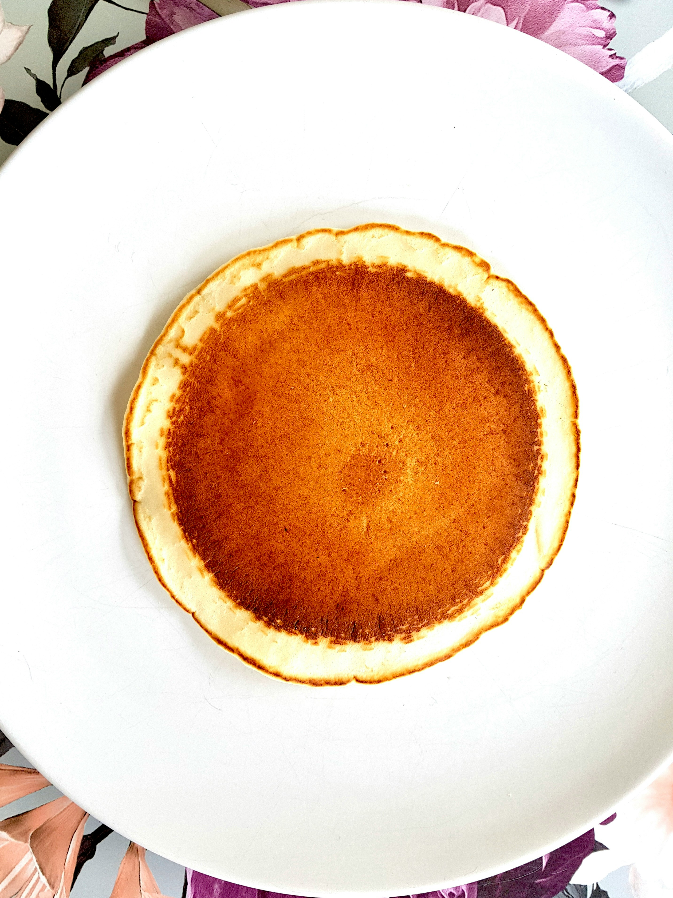

Pancake

Description
Pancakes are a delicacy in many homes and a favourite of kids.
My 7-year old daughter has loved pancakes for as long as
I can remember.
Pancakes are easy to make and are suitable for either breakfast with
a cup of beverage or dinner with same.
Ingredients
- Flour
- Sugar
- Milk
- Egg
- Salt
- Vegetable oil
- Raisins or fresh berries/grapes
- Onions (optional)
- Pepper (optional)
Steps
- Mix a cup of flour in water to form a paste.
- Add sugar and Milk to the mix as desired.
- Whisk your eggs and add to the mix.
- Add a pinch of salt.
- Add fresh onions and pepper if desired.
- Add a little more water so that your mix is neither
watery nor too thick.
- Allow the mix to sit for about 15 minutes.
- Put your non-stick pan on the stove.
- Smear a little oil on the hot pan and pour in some of your mix.
- Let it cook for about 2 minutes and then turn it over
to cook for another 2 minutes
- Your pancake is ready!
- You can serve it with raisins, fresh grapes or honey.
Return to Home page.